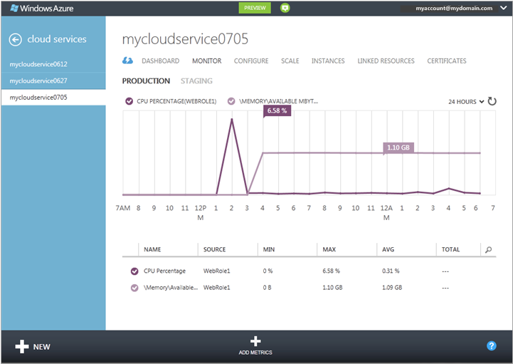

How to Monitor Cloud Services
You can monitor key performance metrics for your cloud services in the Windows Azure Preview Management Portal. You can set the level of monitoring to minimal and verbose for each service role, and can customize the monitoring displays. Verbose monitoring data is stored in a storage account, which you can access outside the portal.
Monitoring displays in the Management Portal are highly configurable. You can choose the metrics you want to monitor in the metrics list on the Monitor page, and you can choose which metrics to plot in metrics charts on the Monitor page and the dashboard.
Table of Contents
Concepts
By default, minimal monitoring is provided for a new cloud service using performance counters gathered from the host operating system for the roles instances (virtual machines). The minimal metrics are limited to CPU Percentage, Data In, Data Out, Disk Read Throughput, and Disk Write Throughput. By configuring verbose monitoring, you can receive additional metrics based on performance data within the virtual machines (role instances). The verbose metrics enable closer analysis of issues that occur during application operations.
By default performance counter data from role instances is sampled and transferred from the role instance at 3-minute intervals. When you enable verbose monitoring, the raw performance counter data is aggregated for each role instance and across role instances for each role at intervals of 5 minutes, 1 hour, and 12 hours. The aggregated data is purged after 10 days.
After you enable verbose monitoring, the aggregated monitoring data is stored in tables in your storage account. To enable verbose monitoring for a role, you must configure a diagnostics connection string that links to the storage account. You can use different storage accounts for different roles.
Note that enabling verbose monitoring will increase your storage costs related to data storage, data transfer, and storage transactions. Minimal monitoring does not require a storage account. The data for the metrics that are exposed at the minimal monitoring level are not stored in your storage account, even if you set the monitoring level to verbose.
How to: Configure monitoring for cloud services
Use the following procedures to configure verbose or minimal monitoring in the Management Portal. You cannot turn on verbose monitoring until you enable Windows Azure Diagnostics and configure diagnostics connection strings to enable Windows Azure Diagnostics to access storage accounts to store the verbose monitoring data.
Before you begin
Create a storage account to store the monitoring data. You can use different storage accounts for different roles. For more information, see help for Storage Accounts, or see How To Create a Storage Account.
Enable Windows Azure Diagnostics for your cloud service roles.
You must update the cloud service definition file (.csdef) and the cloud service configuration file (.cscfg). For more information, see Enabling Diagnostics in Windows Azure.
In the Management Portal, you can add or modify the diagnostics connection strings that Windows Azure Diagnostics uses to access the storage accounts that store verbose monitoring data, and you can set the level of monitoring to verbose or minimal. Because verbose monitoring stores data in a storage account, you must configure the diagnostics connection strings before you set the monitoring level to verbose.
To configure diagnostics connections strings for verbose monitoring
Copy a storage access key for the storage accont that that you'll use to storage the verbose monitoring data. In the Windows Azure Preview Management Portal, you can use Manage Keys on the Storage Accounts page. For more information, see How to Manage Cloud Services, or see help for the Storage Accounts page.
Open Cloud Services. Then, to open the dashboard, click the name of the cloud service you want to configure.
Click Production or Staging to display the deployment you want to configure.
Click Configure.
You will edit the monitoring settings at the top of the Configure page, shown below. If you have not enabled Windows Azure Diagnostics for the cloud service, the Level option is not available. You can't change the data retention policy. Verbose monitoring data for a cloud service is stored for 10 days.

In Diagnostics Connection Strings, complete the diagnostics connection string for each role for which you want verbose monitoring.
The connection strings have the following format. (The sample is for a cloud service that uses default endpoints.) To update a connection string, enter a valid storage account name and storage access key for the storage account that you want to use.
DefaultEndpointsProtocol=https;AccountName=StorageAccountName;AccountKey=StorageAccountKey
Click Save.
If you're turning on verbose monitoring, perform the next procedure after you configure diagnostics connection strings for service roles.
To change the monitoring level to verbose or minimal
In the Management Portal, open the Configure page for the cloud service deployment.
In Level, click Verbose or Minimal.
Click Save.
After you turn on verbose monitoring, you should start seeing the monitoring data in the Management Portal within the hour.
The raw performance counter data and aggregated monitoring data are stored in the storage account in tables qualified by the deployment ID for the roles.
How to: Add metrics to the metrics table
In the Management Portal, open the Monitor page for the cloud service.
By default, the metrics table displays a subset of the available metrics. The illustration shows the default verbose metrics for a cloud service, which is limited to the Memory\Available MBytes performance counter, with data aggregated at the role level. Use Add Metrics to select additional aggregate and role-level metrics to monitor in the Management Portal.

To add metrics to the metrics table:
a. Click Add Metrics to open Choose Metrics, shown below.
The first available metric is expanded to show options that are available. For each metric, the top option displays aggregated monitoring data for all roles. In addition, you can choose individual roles to display data for.

b. To select metrics to display:
- Click the down arrow by the metric to expand the monitoring options.
- Select the check box for each monitoring option you want to display.
You can display up to 50 metrics in the metrics table.
Hint
In verbose monitoring, the metrics list can contain dozens of metrics. To display a scrollbar, hover over the right side of the dialog box. To filter the list, click the search icon, and enter text in the search box, as shown below.

After you finish selecting metrics, click OK (checkmark).
The selected metrics are added to the metrics table, as shown below.

To delete a metric from the metrics table, click the metric to select it, and then click Delete Metric. (You only see Delete Metric when you have a metric selected.)
How to: Customize the metrics chart
In the metrics table, select up to 6 metrics to plot on the metrics chart. To select a metric, click the check box on its left side. To remove a metric from the metrics chart, clear its check box in the metrics table.
As you select metrics in the metrics table, the metrics are added to the metrics chart. On a narrow display, an n more drop-down list contains metric headers that won't fit the display.
To change the time range the metrics chart displays, select 1 hour, 24 hours, or 7 days at the top of the chart.

On the dashboard metrics chart, the method for plotting metrics is different. A standard set of metrics is available, and metrics are added or removed by selecting the metric header.
To customize the metrics chart on the dashboard
Open the dashboard for the cloud service.
Add or remove metrics from the chart:
To plot a new metric, select the check box for the metric in the chart headers. On a narrow display, click the down arrow by n metrics to plot a metric the chart header area can't display.
To delete a metric that is plotted on the chart, clear the check box by its header.
Choose 1 hour, 24 hours, or 7 days of data to display.
How to: Access verbose monitoring data outside the Management Portal
Verbose monitoring data is stored in tables in the storage accounts that you specify for each role. For each cloud service deployment, six tables are created for the role. Two tables are created for each (5 minutes, 1 hour, and 12 hours). One of these tables stores role-level aggregations; the other table stores aggregations for role instances.
The table names have the following format:
WAD*deploymentID*PT*aggregation_interval*[R|RI]Table
where:
deploymentID is the GUID assigned to the cloud service deployment
aggregation_interval = 5M, 1H, or 12H
role-level aggregations = R
aggregations for role instances = RI
For example, the following tables would store verbose monitoring data aggregated at 1-hour intervals:
WAD8b7c4233802442b494d0cc9eb9d8dd9fPT1HRTable (hourly aggregations for the role)
WAD8b7c4233802442b494d0cc9eb9d8dd9fPT1HRITable (hourly aggregations for role instances)